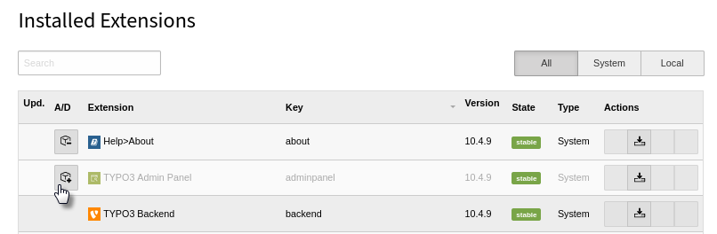

Installation¶
This extension is part of the TYPO3 Core.
Installation with composer¶
Check whether you are already using the extension with:
composer show | grep adminpanel
This should either give you no result or something similar to:
typo3/cms-adminpanel v10.4.9
If it is not yet installed, use the composer require command to install
the extension:
composer require typo3/cms-adminpanel
The given version depends on the version of the TYPO3 Core you are using.
Once installed, you will need to activate the extension.
Installation without composer¶
In an installation without composer, the extension is already shipped. You just have to activate it.
Activate the extension¶
- In the backend, navigate to the Admin Tools > Extensions module.
- Click the Activate icon for the Admin Panel extension.

Extension manager showing Admin Panel extension